Welcome to my PS70 portfolio! Here you will find weekly progress of my digital fabrication journey.
08: CNC milling, casting and molding
This week's assignments were a struggle for so many reasons. So, this is more of a documentation of my various failures...but hey, at least I learned a lot from them!
1. Milling a mold, casting and molding
One of our assignments was to cast a mold. I was inspired by these adorable chopstick holders (partiuclarly the shiba inu one...)
Luckily, I was able to find a mesh model of a shiba on Thingaverse. I wanted the middle part of the dog to be the chopstick "rest", so I edited the mesh in Blender using the sculpt feature.
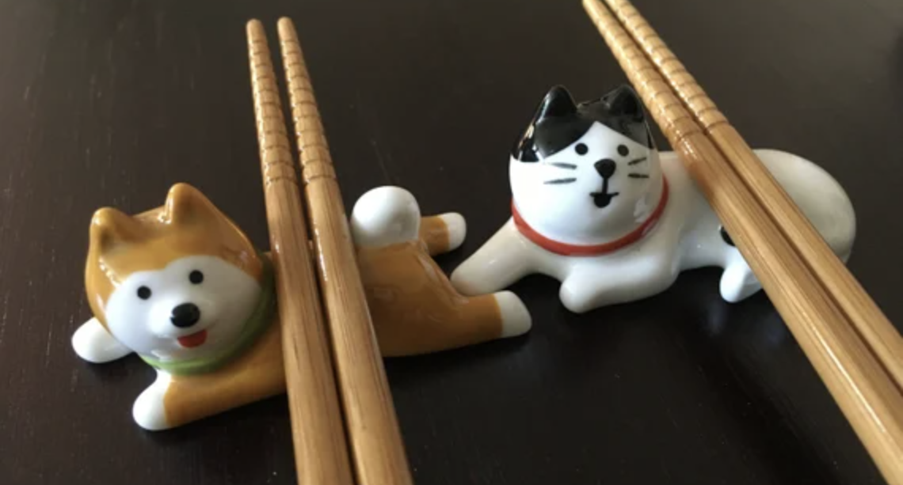
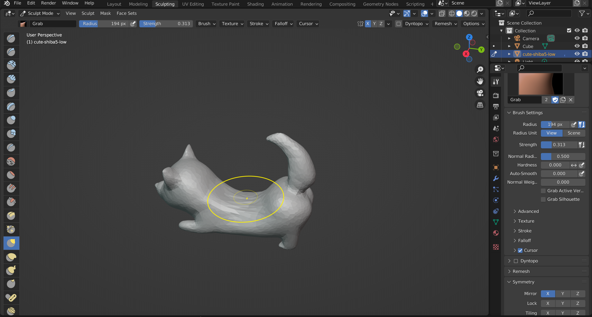
I imported the .obj mesh file into Fusion360 and sliced the shiba in half as my plan was to create two half mold positives of the shiba and then put them together. I created a box around each half and added pegs/divots in each corner so I could align the molds later on.
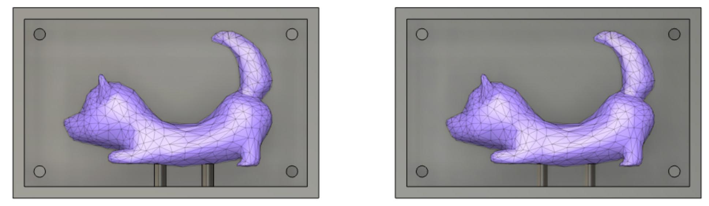
I did a test mill on the SRM-20 milling machine using the 1/8" end mill. It worked fine - the wax positive was a bit ridged but the general shape was there.
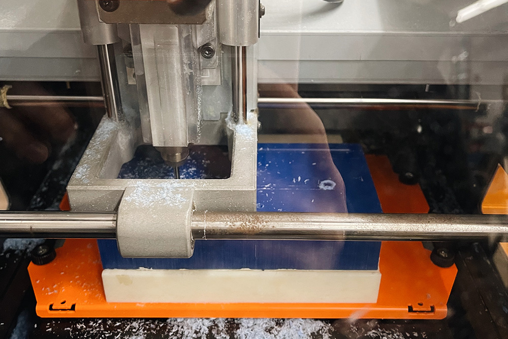
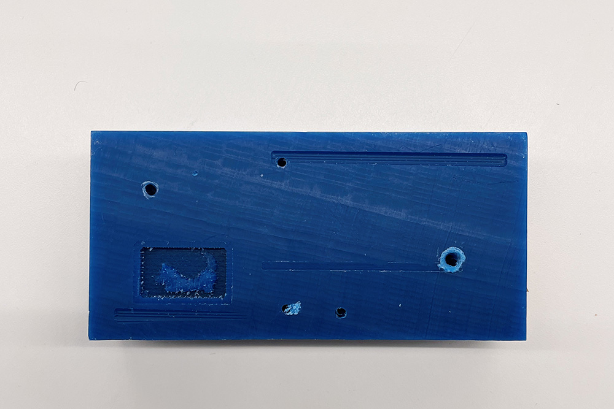
I did another print after this but it turned out too small. I also ran into several issues with the end mill falling out and the mill stopping halfway through so I had to restart several times. I also felt like the ridges were a bit too obvious with the 1/8" end mill so I tried switching to a 1/16" end mill. However, the end mill got jammed partway through and the machine stopped. I'm assuming this was either because the end mill couldn't go deep enough or there was something about the shape of my model that didn't work with the 1/16" bit. I ultimately ended up switching back to the 1/8" bit which was fine when I scaled the model up a bit.
Another issue I encountered was that the pegs/divots were too close to the edge of the box. It didn't appear that way in Fusion 360 but when it was milled, they were touching the edge of the box. Some of the divots also didn't show up. So, I repositioned the pegs/divots and increased the depth of the divots - it kind of worked.
Because I wasn't 100% confident that the milled mold would work, I also 3D printed the mold just in case.
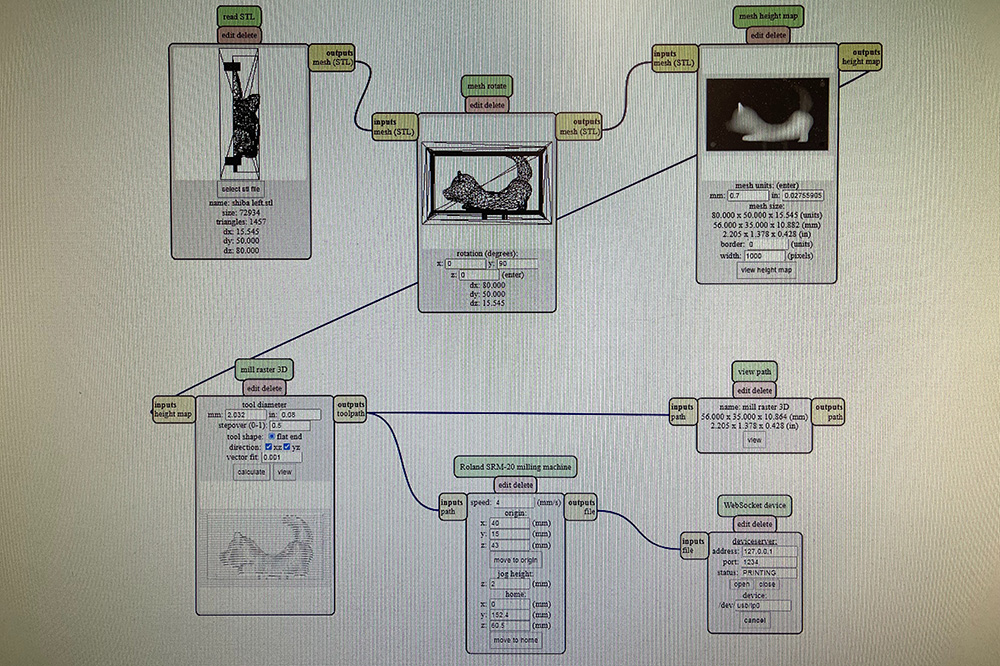
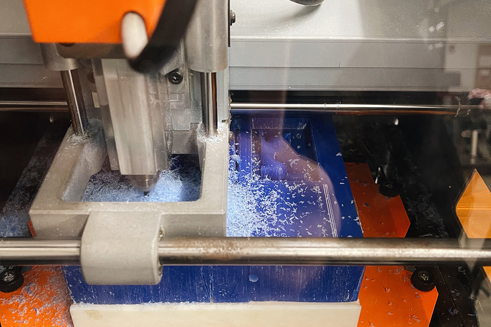
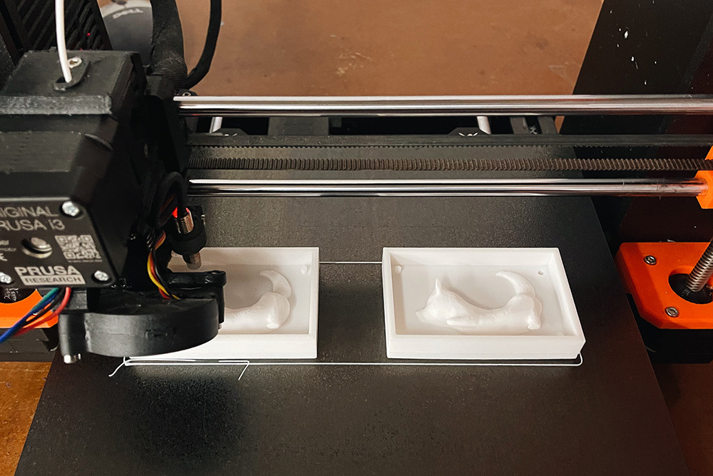
I was pretty happy with the way the mold positives turned out! The 3D printed mold positive clearly had a lot more detail and had undercuts, whereas the milled mold wasn't as precise and did not have undercuts.
To create the actual mold, I used OOMOO®25 silicone rubber with a 1A:1B ratio. We were 9 hours into the process at this point, so I decided to call it a night and just let it cure overnight.
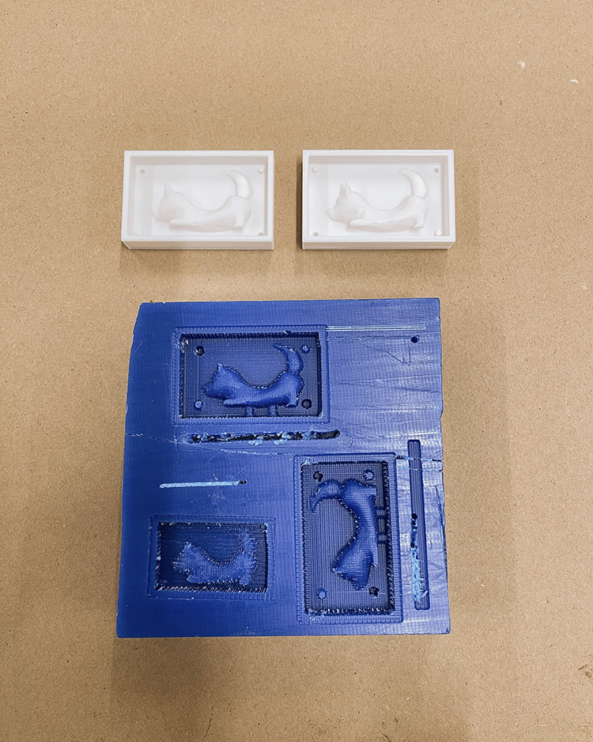
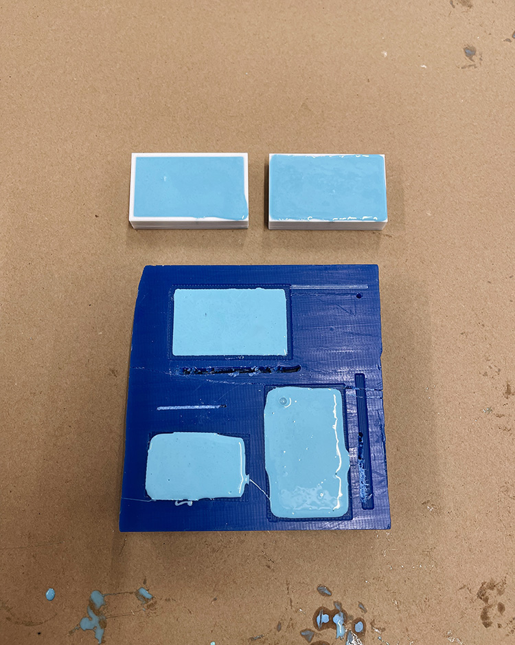
The next morning, I went back to the labs to take out the molds - they worked! But wait...turns out, I did the model incorrectly. I mirrored the pegs/divots, assuming I was supposed to if I were to put two halves of the molds together. What I really needed to do was to keep the pegs/divots in the same position and instead mirror the shiba. nooooooooooooooooooo...................asd;fljkfa;ldkjakds
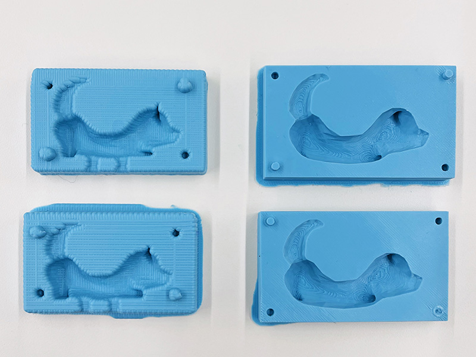
THE SILICONE WAS FLEXIBLE ENOUGH TO SURVIVE BEING TAKEN OUT OF THE 3D-PRINTED MOLD WITH UNDERCUTS
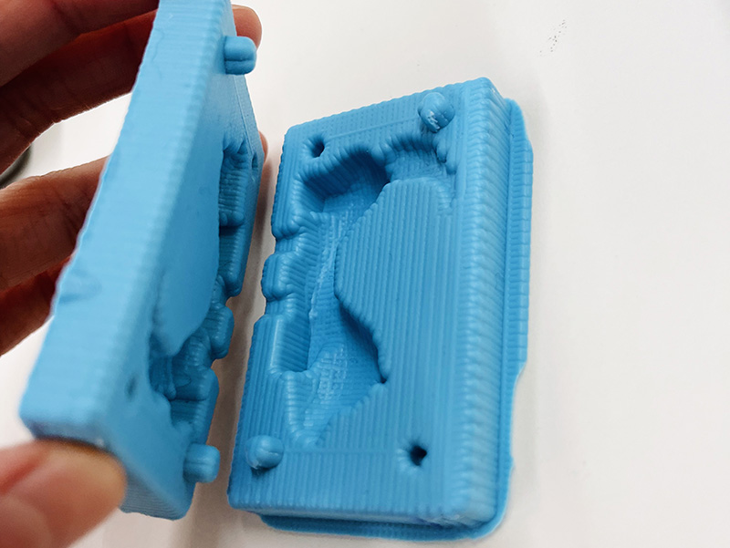
MOMENT OF DESPAIR. ABSOLUTELY NOTHING LINED UP.
But one must not give up that easily! I chatted with Nathan and he suggested that instead of using the divots, I could try creating a "lip" so that one mold would fit into the other mold. So remade the models and tried that...
Unfortunately, I messed up the first print (another 3 hours gone *cries*). I sized the boxes so that one would be larger than the other, but when I poured in the mold material, I realized that I also needed to extrude part of the box to actually create the "lip"...lol. It wasn't the biggest deal since I would still be able to put the two molds together, but I was a bit afraid that since it wasn't watertight, the casting material would leak out. So, I adjusted the model to account for the "lip" and 3D printed it (which, of course, failed halfway through...)
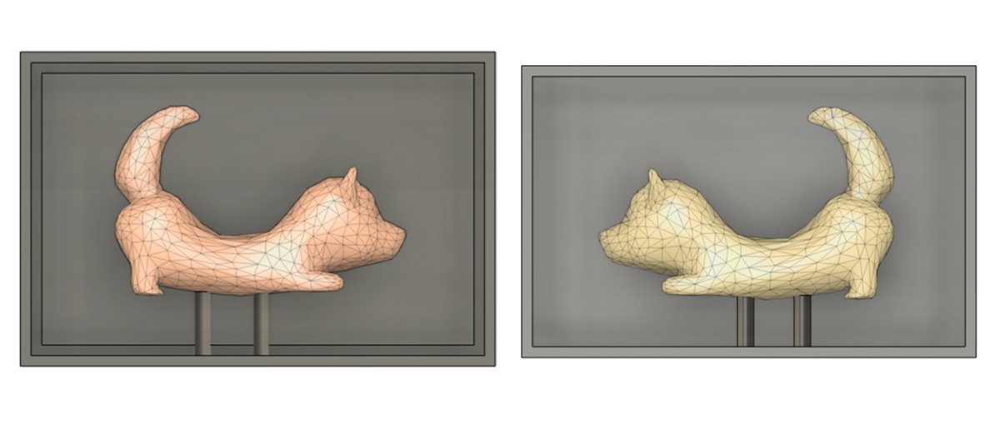
I used SORTA-Clear™ 37, which is a food safe translucent silicone rubber since we ran out of the OOMOO®25. I guess now I can make chopstick holders that are also edible...?
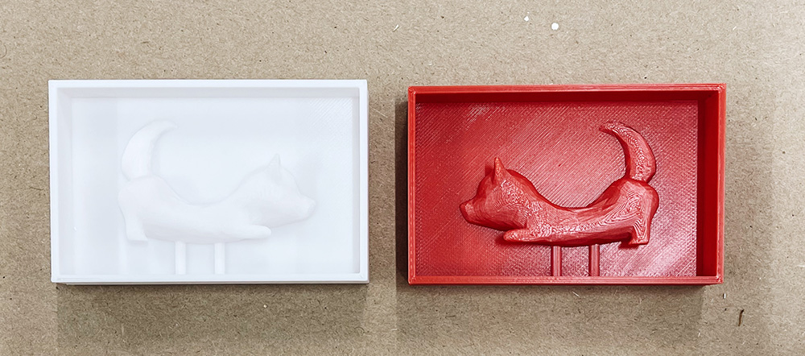
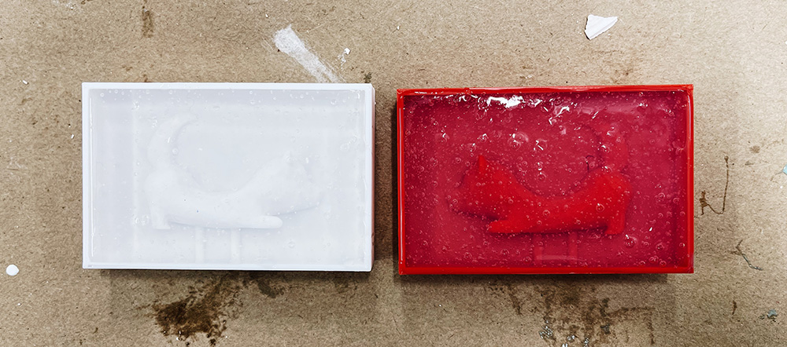
I let the molds cure overnight and for most of the day. They turned out well and the two pieces fit together - yay! I thought it was fairly watertight but taped the two molds together just to be safe. However, when I tried casting them with plaster, I noticed that the mixture wasn't getting into the undercutted parts (namely the ears and legs). I tried shaking the mold gently but that was a mistake - the plaster leaked out :( Because I was wearing gloves and the process was a mess, I wasn't able to get photos.
In my second attempt, I tried injecting some plaster into the ears and legs first, and then quickly put one half of the mold onto the other. It almost worked, except the molds weren't perfectly aligned. When I tried to realign them, the plaster leaked out again - ugh! I wiped off the leaked plaster around the shiba and by the time I was done, I noticed that the plaster in the ears and legs were starting to cure already. Instead of removing it, I left it in, put the two molds back together, secured them with clamps, and injected the rest of the plaster. Then the waiting game began (again...)
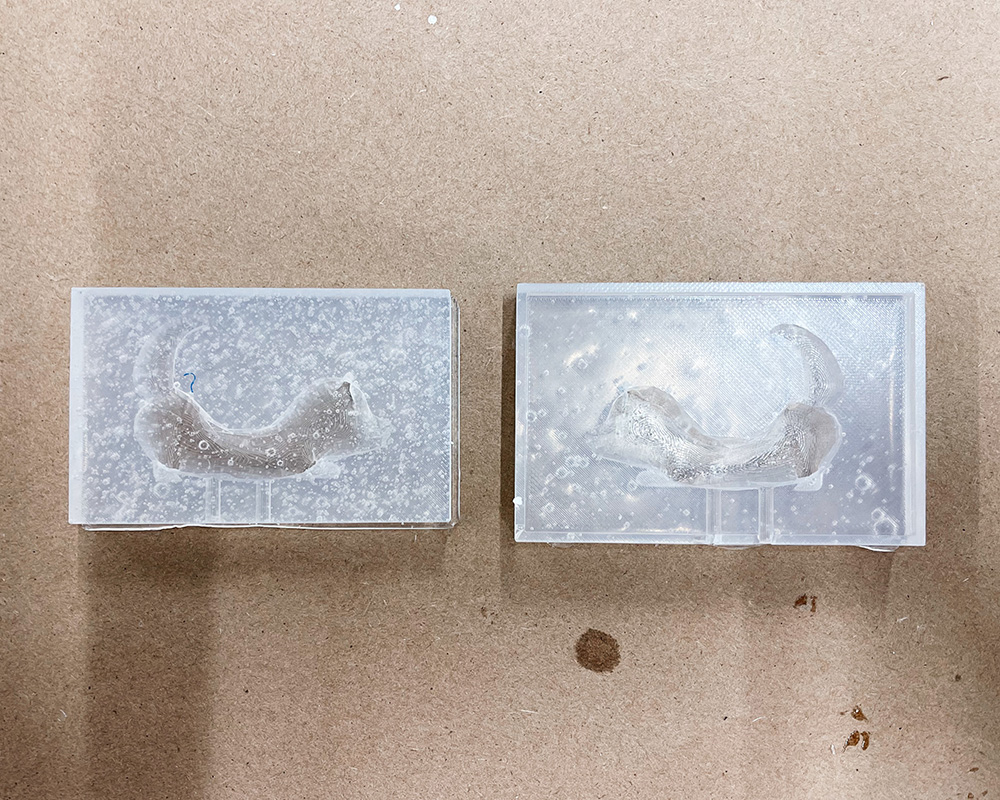
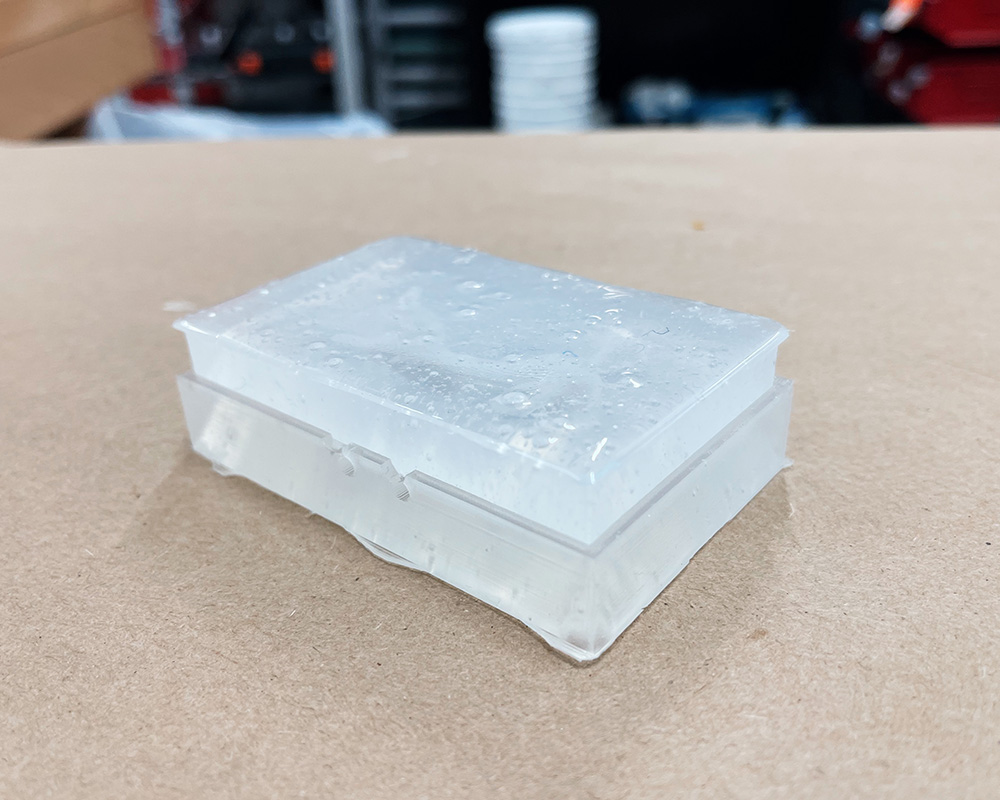
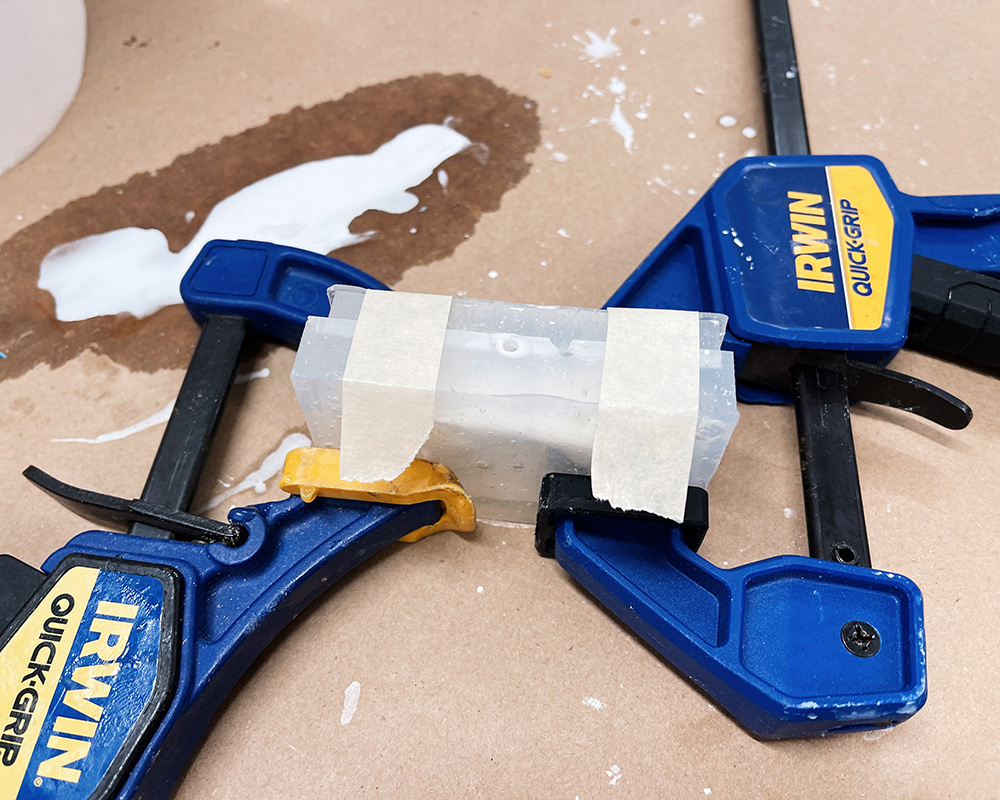
Here's the result! Unfortunately the legs didn't survive :( I think it might've been beauase the plaster in the legs were already semi-dry by the time I injected the rest of the plaster, and somehwo it didn't adhere together. That, or the legs were too thin/fragile and broke off easily when I was trying to take it out of the mold. But the ears survived! And most of the shiba is one piece! It also fits a pair of chopsticks :') I consider that a win.
But since I already put in so much time...I wanted to try and get this right. I did one more cast with the plaster (currently waiting for it to dry!) and hope to try casting it with metal as well (once we stock up on more). I'll consider this finished for now, but stay tuned for possible updates...
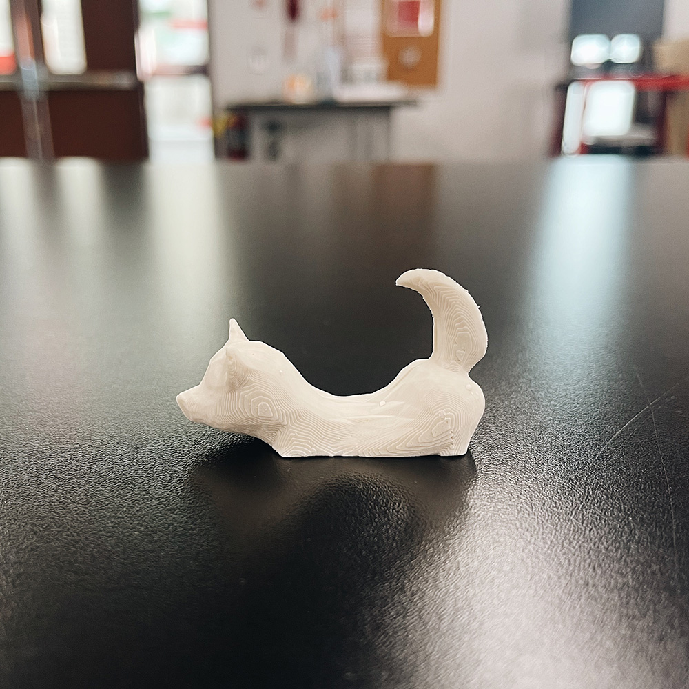
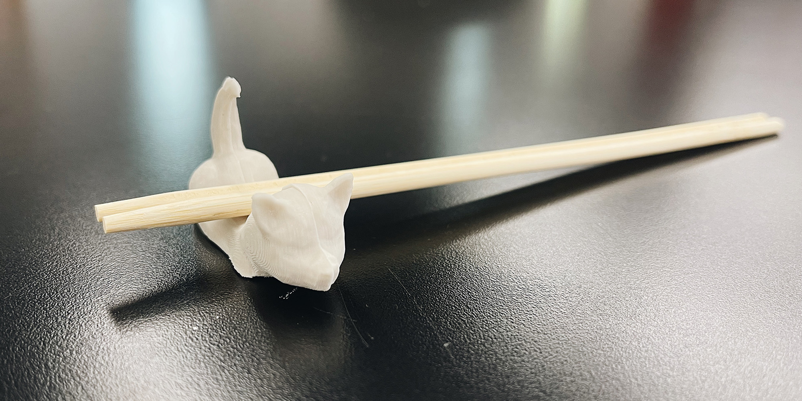
2. CNC milling using ShopBot
haha...the other epic struggle of the week! To be fair, I had a pretty ambitious design I wanted to mill so I definitely dug this hole for myself. The design had a lot of intricate details and I was told that this would not be possible...but of course I thought: "Challenge accepted!"
I spent some time in Rhino removing some details from the file that I thought would be too difficult to cut, given that we were using a 1/8" end mill on the ShopBot. All the curves were closed and I was hoping to engrave the wood. However, when I tried creating pocket toolpaths in Aspire, I got error messages saying that the toolpath could not be created. Eventually, I gave up on the pocket cuts...unless I took out almost all the detail, it wasn't possible to create the toolpaths :(

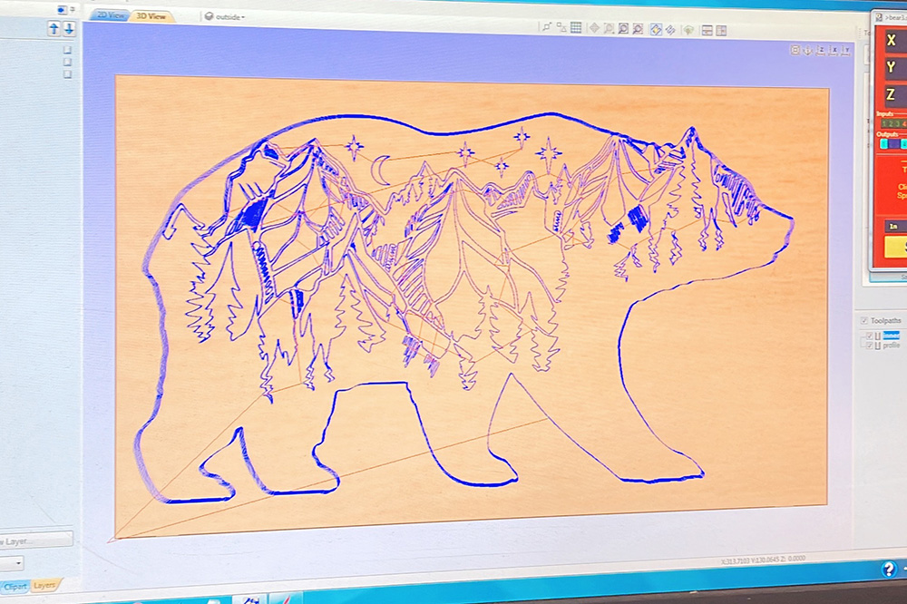
Instead, I tried to do pocket cuts for all the curves. I also encountered issues here as some the curves were so close together that either the toolpath couldn't be calculated again, or I would lose so much detail that almost nothing would be cut. After hours of troubleshooting, I discovered that the solution was to get the machine to cut on the path as opposed to outside / inside the path. I set the cut depth for the inner paths to 7mm. After securing a piece of OSB using the nail gun (which was oddly satisfying to use), I finally did my first test cut!

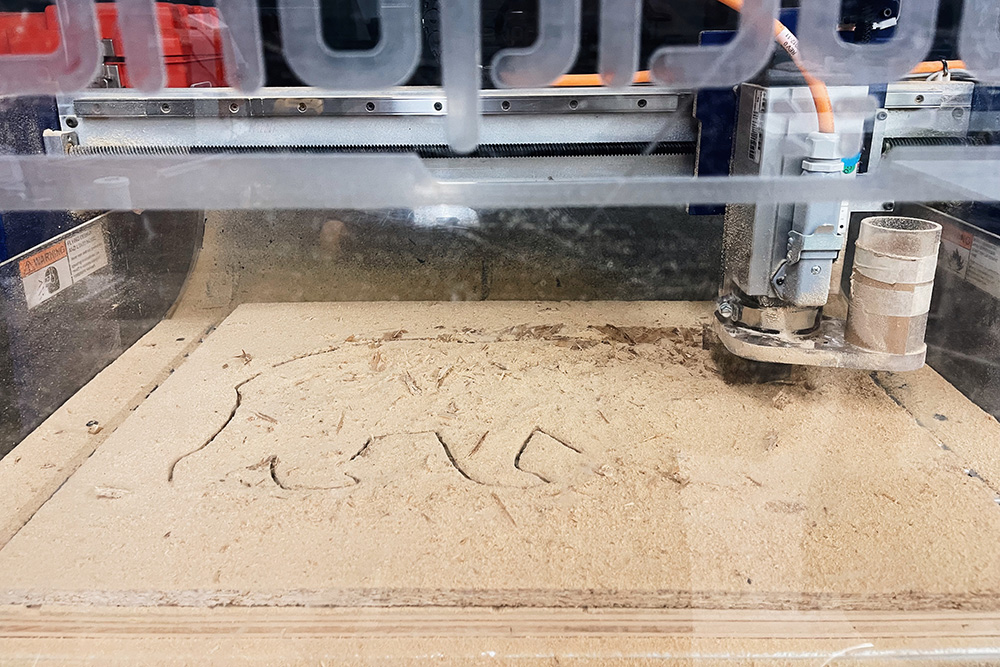

If you look closely, you'll see that while some of the inner profile cuts worked, most of the middle part of the bear ended up being a mess. The lines were too close together so the machine ended up taking out huge chunks of wood.
To remedy this, I spent some time simplifying the design even further in Rhino. I deleted, shrunk, and reoriented the curves and then did a second test cut with a 3mm cut depth. It's a bit difficult to see in the image below because of the texture of the OSB, but this version turned out a lot better. Most of the details were retained - yay! This cut also took approx. 1/3 of the time of the first test cut since I reduced the cut depth.
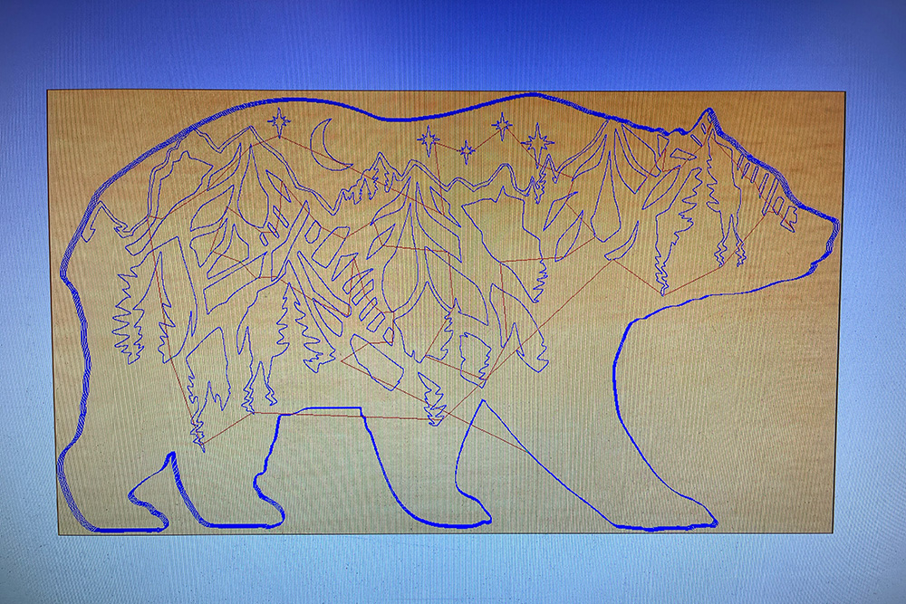
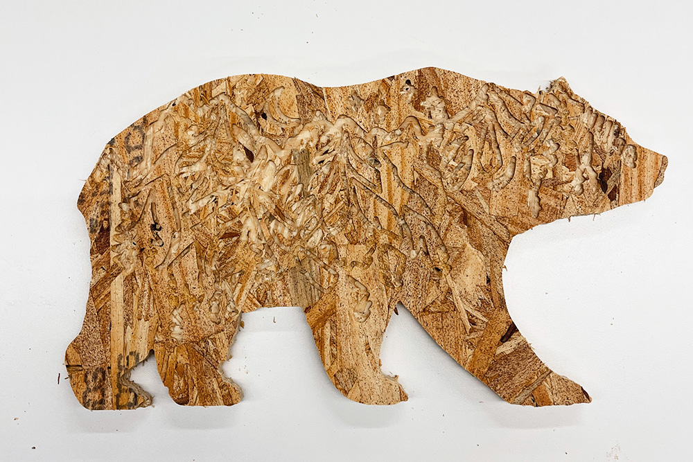
After a relatively succesful test cut, I was ready to do the final cut on plywood. I used ~19mm (0.75") plywood - I'm more comfortable working in metric but I realized that inches might've been easier to work with in this case. Also, I measured the plywood after I nailed it onto the bed and thought it was 17mm. Unfortunately, when I ran the ShopBot, the outline profile cut didn't cut completely through the wood, so I created a new file with just the outline, set the depth to 19mm, and ran the cut again. In retrospect, I probably should've used a caliper to get a precise measurement of the wood thickness before securing it onto the bed. Noted for next time!
For the final cut, I used a cut depth of 4mm for the inner detail. Although the final cut isn't quite the same as my original vision, I'm still super happy with the way it turned out! (especially considering I almost gave up on this design altogether...) There was some sawdust stuck in the cuts even after I vacuumed it, so I took a screwdriver and tried to get the sawdust out. I also sanded down the edges so there weren't any dangerous wood splints sticking out. I also want to paint the surface black so the "engraved" parts are more obvious but I wasn't able to find black paint in the lab that night. Will attempt again another day!
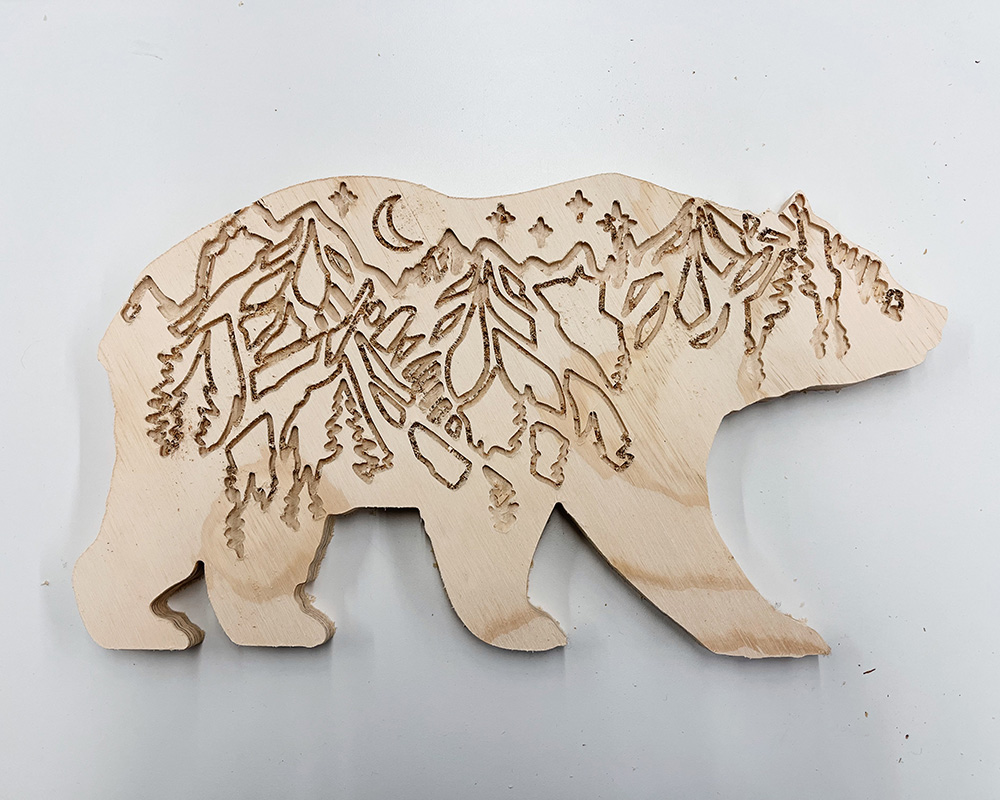
RIGHT OUT OF THE MACHINE
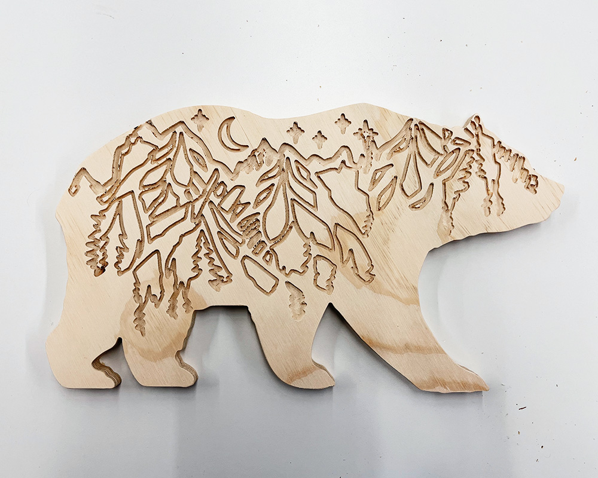
AFTER CLEANING & SANDING